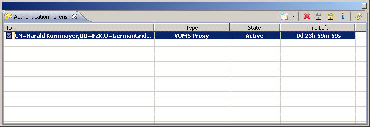
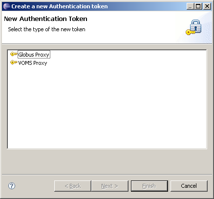
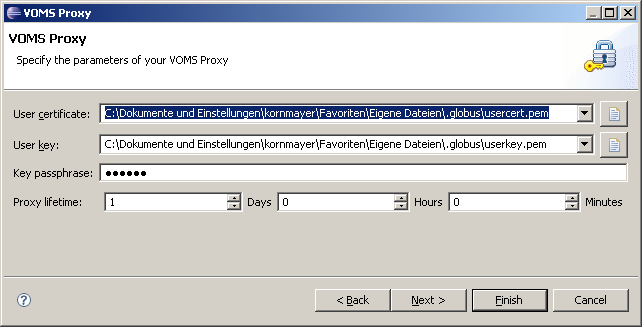
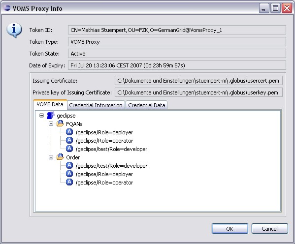

Authentication
How to implement MY authentication mechanism?
- Access to Grid infrastructures is based on security tokens
current implementations for
- Before interacting with the Infrastructure such
“authentication tokens”
- need to be created (as Object in the Java-sense)
- validated (check files, passphrases ...)
UI Components
The Grid Authentication View shows all currently available
tokens.

The New Token Wizard helps to create new tokens of any registered
type.

VOMS-specific wizard page

VOMS-specific Info-Dialog

Important Extension points
Core extension point
eu.geclipse.core.authTokens- Provides a scheme for defining new authentication token types
by id, name, descriptor and corresponding wizard
UI extension point
eu.geclipse.ui.authTokenUI- Provides a scheme for defining a wizard for creating new
tokens of a specific type and for creating an UI-factory that may
provide an info-dialog for these tokens
Interfaces to implement
eu.geclipse.core.auth.IAuthenticationToken- Implement this to represent your token (in fact it is
recommended to extend
eu.geclipse.core.auth.AbstractAuthenticationToken)
eu.geclipse.core.auth-IAuthenticationTokenDescription- Implement this in order to hold all parameters that are
needed for a successful token creation
eu.geclipse.ui.IAuthTokenUIFactory- Implement this in order to create token specific UI
components (in fact it is recommended to extend
eu.geclipse.ui.AbstractAuthTokenUIFactory)
org.eclipse.ui.INewWizard- Implement this in order to provide a wizard that can be used
to create a new token of a specific type